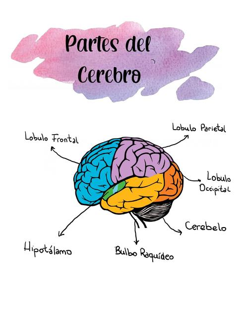

Juan Pablo Soto Cantú
Alvaro Feregrino
Jose Andres García Cruz
Bruno Barros Sanchez
Profesor Jose Luis Dávila Delgado
El cerebro es un órgano compuesto principalmente por tejido nervioso. Se divide en dos mitades llamadas hemisferios cerebrales: hemisferio cerebral derecho y hemisferio cerebral izquierdo. Estos, a su vez, se dividen en varios lóbulos:
Lóbulo frontal
Lóbulo parietal
Hipotálamo
Lóbulo temporal
Lóbulo occipital
Cerebelo
El lóbulo temporal procesa los recuerdos y los integra con las sensaciones del gusto, el oído, la vista y el tacto. En otras palabras, se encarga de procesar la memoria.
El lóbulo parietal procesa información relacionada con la temperatura, el gusto, el tacto y el movimiento. Es la entrada sensorial que proviene de un área del cuerpo (como por ejemplo los dedos). La superficie del lóbulo parietal está implicada en el procesamiento de la información. Es un elemento esencial de la información espacial, nos proporciona la capacidad de juzgar el tamaño, la distancia y la forma de los objetos.
Las hormonas "controladoras" del hipotálamo regulan la producción de hormonas de la pituitaria. Estas hormonas regulan procesos corporales tales como el metabolismo y controlan la liberación de hormonas de glándulas como la tiroides.
El lóbulo frontal no sólo es conocido por el hecho de ser el lóbulo más grande en el encéfalo humano, sino también por las importantísimas funciones y capacidades cuya existencia debemos a esta estructura. ¿Qué capacidades son estas? Básicamente las funciones del lóbulo frontal son todas aquellas que atribuimos exclusivamente a los seres racionales, con criterio propio, con la posibilidad de actuar según estrategias complejas y bien preparados para vivir en sociedades muy grandes.
El cerebelo procesa información proveniente de otras áreas del cerebro, de la médula espinal y de los receptores sensoriales con el fin de indicar el tiempo exacto para realizar movimientos coordinados y suaves del sistema muscular esquelético.
Los lóbulos occipitales son el centro de procesamiento de nuestro sistema visual de la percepción. Reciben información visual de esta área, desde donde esta información va a otras zonas cerebrales que se especializan en otros temas.